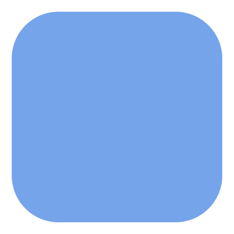

Tasks in the GUI/Tui
Task & Job States
Tasks are a workflow abstraction; they represent future and past jobs as
well as current active jobs. In the Cylc UI, task states have monochromatic
icons like this:  .
.
Jobs represent real job scripts submitted to run on a job platform. In the Cylc UI, job states have coloured icons like this: .
A single task can have multiple jobs, by automatic retry or manual triggering.
State |
Task Icon |
Job Icon |
Description |
|---|---|---|---|
waiting |
|
waiting on prerequisites |
|
preparing |
|
job being prepared for submission |
|
submitted |
job submitted |
||
running |
|
job running |
|
succeeded |
|
job succeeded |
|
failed |
job failed |
||
submit-failed |
job submission failed |
||
expired |
will not submit job (too far behind) |


{kind=link}
{kind=link}
{kind=link}
{kind=link}
{kind=link}
{kind=link}
{kind=link}
{kind=link}
{kind=link}
The running task icon contains a clock face which shows the time elapsed as a proportion of the average runtime.
{kind=link}

{kind=link}
{kind=link}
Task Modifiers
Tasks are run as soon as their dependencies are satisfied, however, there are some other conditions which can prevent tasks from being run. These are given “modifier” icons which appear to the top-left of the task icon:

|
Held: Task has been manually held back from running. |
Runahead: Task is held back by the runahead limit. |
|

|
Queued: Task has been held back by an internal queue. |
{kind=link}
The “n” Window
Changed in version 8.0.0.
Cylc workflow graphs can be very large, even infinite for cycling workflows with no final cycle point.
Consequently the GUI often can’t display “all of the tasks” at once. Instead it displays all active tasks (e.g. running tasks) as well as any tasks which are a configurable number of tasks away from them in the task dependency graph.

- n=0:
The
n=0window contains active tasks. An active task is a task which is near ready to run, in the process of running, or which requires user intervention (see the glossary for a more detailed description).- n=1:
The
n=1window contains all “active tasks” as well as any tasks one “edge” out from them, i.e. their dependencies (the tasks that come immediately before them in the graph) and their descendants (the tasks that come immediately after them in the graph).- n=2:
The
n=2window contains all “active tasks” as well as any tasks two edges out from them, and so on.
This animation shows how the n-window advances as a workflow runs, tasks are
colour coded according to their n-window value with the colours changing from
n=0 (blue) to n=8 (pink):
By default the GUI/Tui displays the n=1 window. You can change this using
the “Set Graph Window Extent” command which is currently only available in the
GUI.
Note
The “graph window extent” is a property of the workflow not a property of the GUI so persists between sessions. Better visibility and easier control over the n-window are planned in future releases of Cylc.
Warning
High “graph window extent” values can cause a Cylc scheduler and the GUI to run slowly.